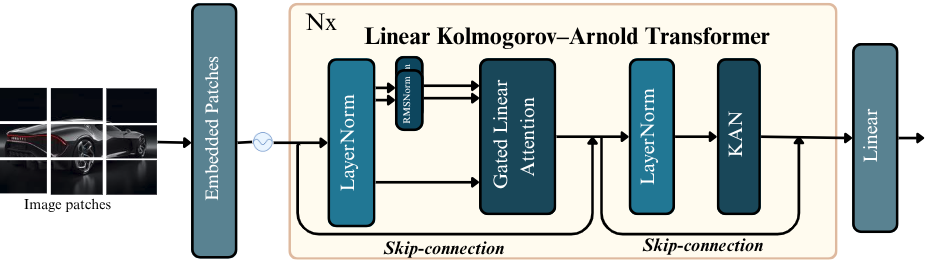
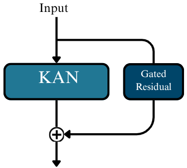
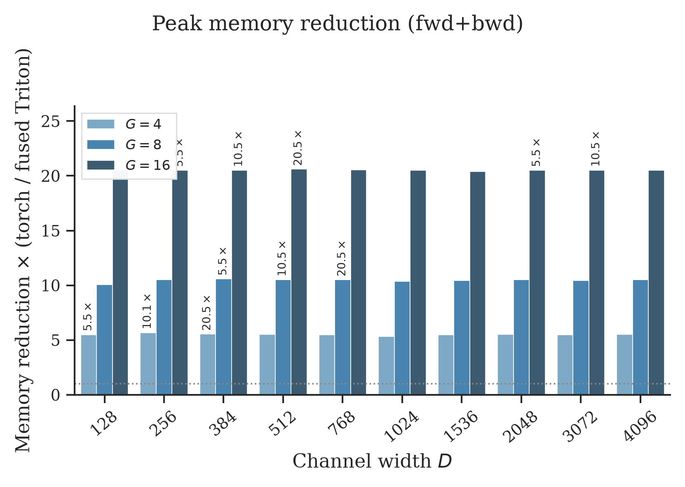
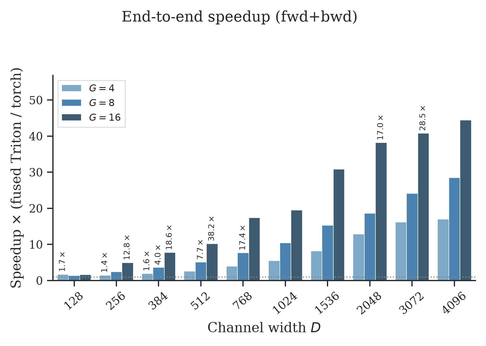
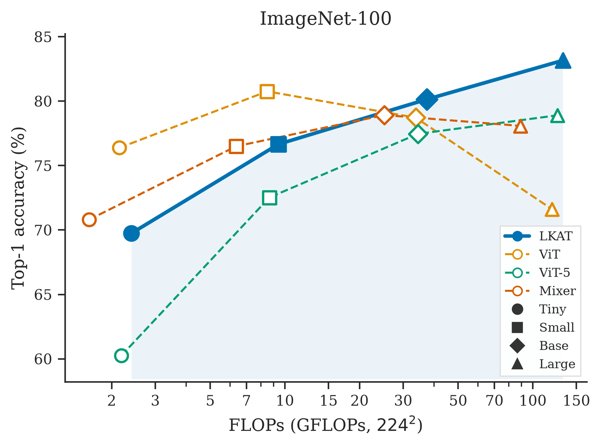
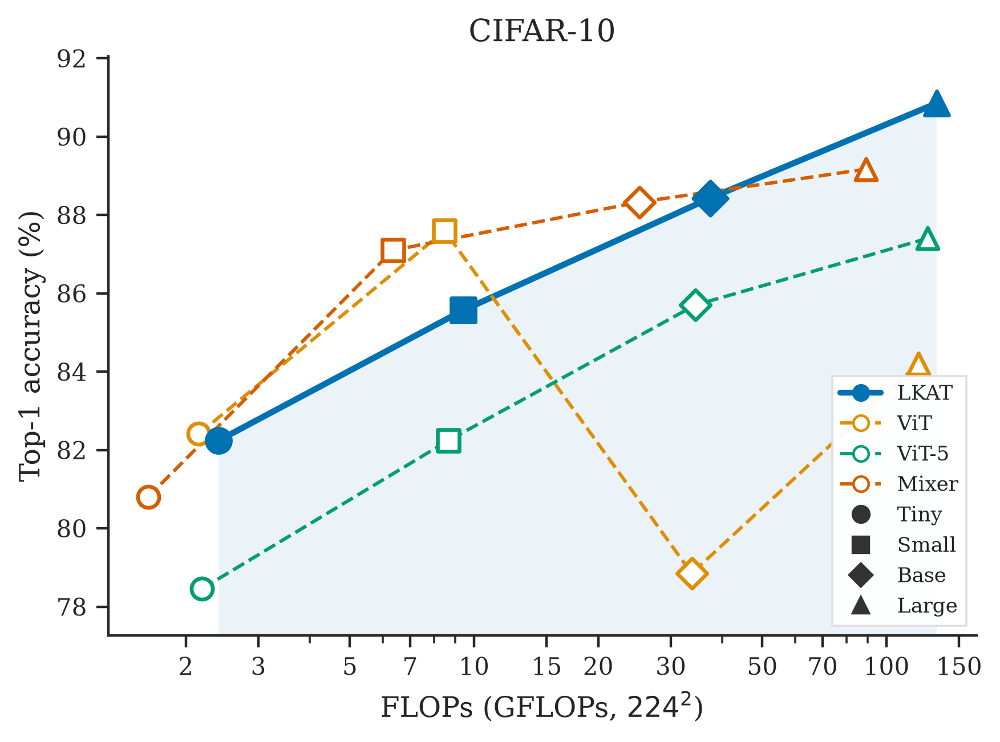
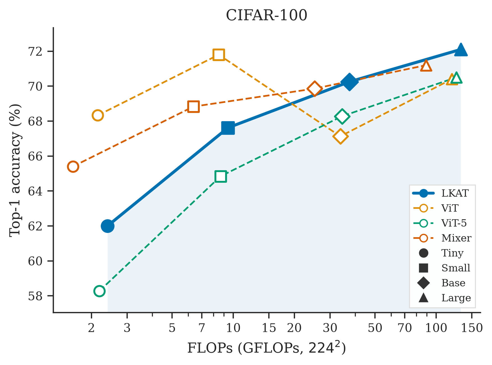

Abstract
Vision Transformers devote most of their parameters to MLPs for channel mixing, but still rely on quadratic multi-head self-attention for token interactions. While linear attention fixes the complexity problem, bringing it down to O(N), it is usually just paired with the same fixed-activation MLP as before. Kolmogorov–Arnold Networks place learnable univariate functions on the edges instead; however, existing vision KANs either retain standard attention or remove attention entirely. We introduce LKAT (Linear Kolmogorov–Arnold Transformer) to close this gap: an isotropic ViT-style encoder that couples chunk-wise Gated Linear Attention with a two-layer KAN feed-forward block, backed by an I/O-aware fused RBF–KAN kernel. Under a shared DeiT-style recipe, LKAT-B outperforms ViT-B/16, ViT-5-B, and Mixer-B/16 on ImageNet-100; Tiny, Small, and Base variants scale consistently on CIFAR-10/100, with effective transfer from ImageNet-100 pretraining.
1 Introduction
Two redesigns of the ViT block.
We keep a flat ViT-style topology and redesign both operators: replace MHSA with chunk-wise Gated Linear Attention (via FLA), and replace the MLP with a two-layer RBF-KAN, implemented as fused Triton kernels so the radial grid stays practical.
- LKAT — ViT architecture with GLA + two-layer KAN feed-forward.
- Fused RBF–KAN — I/O-aware Triton kernels for radial-basis grid maps.
- Mid-scale eval — CIFAR-10/100 and ImageNet-100 vs ViT, ViT-5, Mixer; CIFAR fine-tuning from ImageNet-100.
2 Method
Linear Kolmogorov–Arnold Transformer
Patch embedding feeds N pre-norm blocks: LayerNorm → GLA (per-head RMSNorm on Q/K, 2D RoPE on patches) → residual; LayerNorm → two-layer RBF-KAN → residual. A linear head reads the final class token.

Channel-mixing variant
A gated residual around the RBF–KAN block further improves ImageNet-100 Acc@1 relative to the default feed-forward path.

Fused RBF–grid linear kernels
Following FastKAN, edge functions use a Gaussian RBF grid. We fuse the weighted basis sum in Triton to avoid materializing the intermediate […, D, G] tensor in HBM — cutting peak memory and improving wall-clock vs an unfused torch baseline.


3 Experiments
Image classification
Shared DeiT-style recipe. LKAT-T/S/B/L scale monotonically with capacity on CIFAR-10/100 and ImageNet-100. Among Base models on ImageNet-100, LKAT-B exceeds ViT-B/16, ViT-5-B, and Mixer-B/16.



6–7 Discussion & Conclusion
Complementary inductive biases.
LKAT scales monotonically where plain ViT can plateau under the same mid-scale recipe. Ablations show that a gated KAN residual and denser RBF grids help on ImageNet-100; fine-tuning from ImageNet-100 yields large Acc@1 gains over training from scratch. Gated linear attention and KAN-based radial bases are complementary for mid-scale visual representation learning — motivating ImageNet-1K scale-up under the same block design.
Code
Reproduce
git clone https://github.com/mehizelali/linear-kan-transformer.git
cd linear-kan-transformer
pip install -r requirements.txt
python train.py -c yaml/lkat_b_imagenet100.yamlCitation
BibTeX
@misc{mehizel2026lkat,
title = {Rethinking Vision Architectures with Gated Linear Attention and {KAN}},
author = {Mehizel, Ali and Khaldi, Oussama},
year = {2026},
eprint = {2609.22506},
archivePrefix = {arXiv},
primaryClass = {cs.CV},
url = {https://arxiv.org/abs/2609.22506}
}
Builds on Flash Linear Attention and FastKAN.